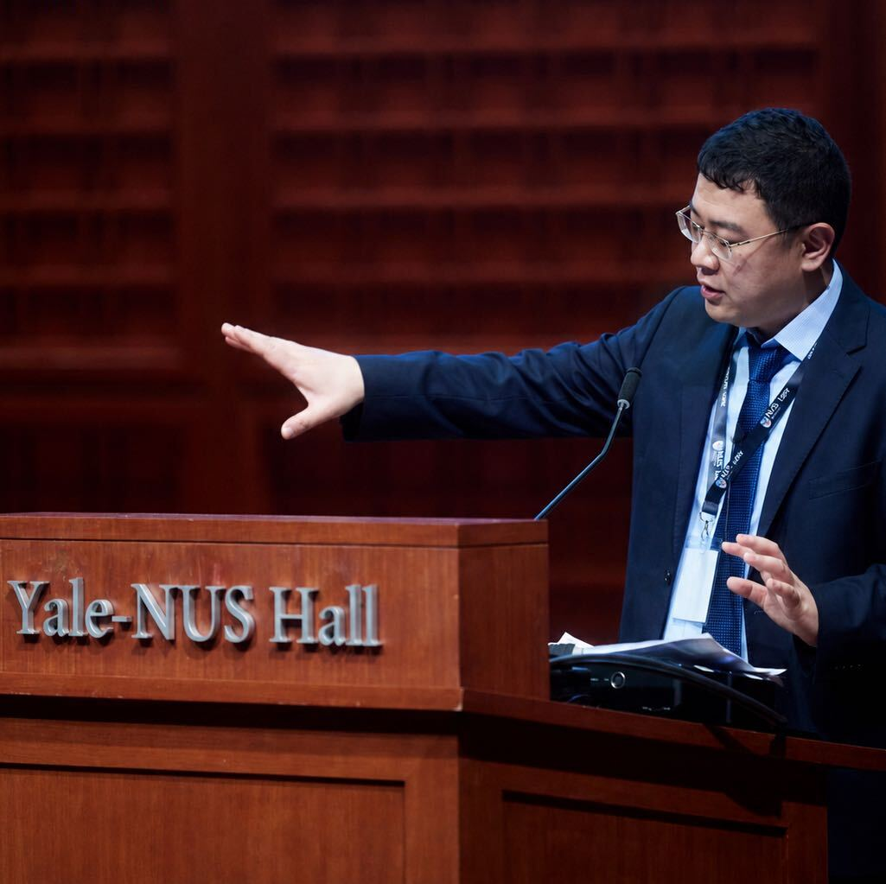

FINANCE · CORPORATE GOVERNANCE
Qi Wang
Research Fellow in Finance
School of Management and Economics
The Chinese University of Hong Kong, Shenzhen
My research focuses on corporate governance, director and shareholder behavior, and Chinese financial markets. I study how communication and shareholder voice shape corporate decisions, from the formation of board agendas to shareholder voting.
I received my Ph.D. in Banking and Finance from the University of New South Wales in 2023. My dissertation chair was Ronald W. Masulis.

RESEARCH
All papersJOB MARKET PAPER
How Shareholder Voice Shapes Board Agendas
Board voting offers an incomplete picture of director influence, overlooking board agenda-setting and board–shareholder meeting interactions.
Using corporate disclosures in China, we trace the decision process from board agenda formation to shareholder voting.
BACKGROUND
Education
University of New South Wales
Ph.D. in Banking and Finance
Dissertation chair: Ronald W. Masulis
Dean’s Award for Outstanding PhD Theses, 2023
University of Sydney
Bachelor of Commerce, First Class Honours in Finance, 2016
Bachelor of Commerce, Accounting and Finance, with Distinction, 2015
CURRICULUM VITAE
CV & contact
Education, research, teaching, and academic service.
qi.wang9@unswalumni.comPrimary email
qiwang9@cuhk.edu.cn
Level 5, TxD Building
The Chinese University of Hong Kong, Shenzhen
Shenzhen, Guangdong 518172, China
+86 187 6673 1205 China · Primary phone
+61 451 486 682 Australia